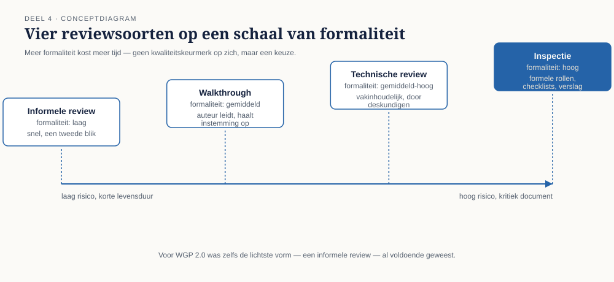
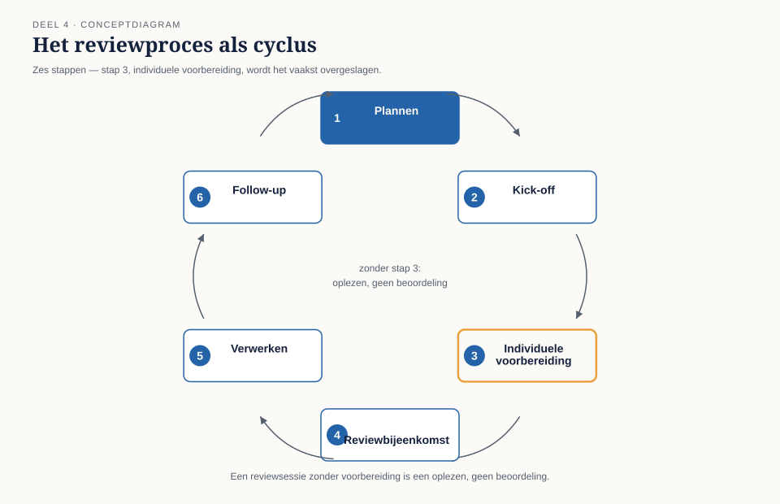
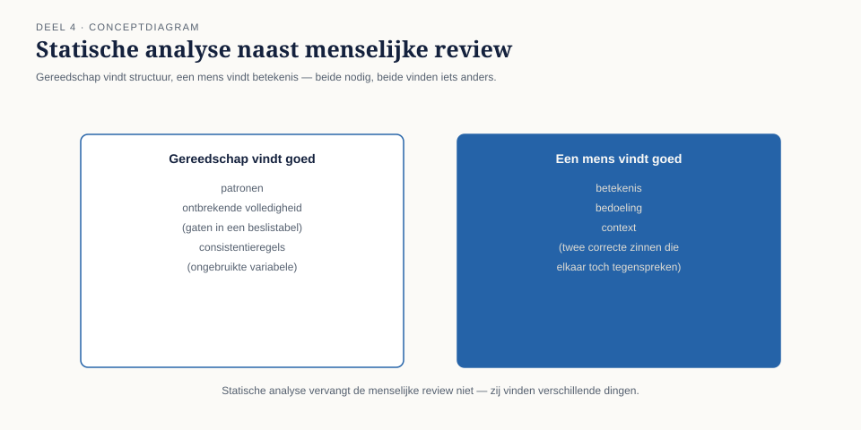

Cursus Testen en Kwaliteitsborging · Niveau 1 (ISTQB CTFL) · Deel 4 van 30
Statisch testen.
Ergens in hoofdstuk 4 van het functioneel ontwerp van WGP 2.0 stond één zin over deeltijdwijzigingen; in bijlage B stond een andere. Beide zinnen zijn correct Nederlands, beide zijn intern consistent, en samen spreken ze elkaar tegen voor precies het geval dat later de storing veroorzaakte. Een ervaren reviewer met een uur de tijd had het gevonden. Dit deel behandelt statisch testen, reviewsoorten, het reviewproces en statische analyse — en sluit bevinding T4.
9secties
±2uleestijd + werkboek
7controlevragen
T4bevinding gesloten
Positionering. Deze cursus is een voorbereiding op het ISTQB Certified Tester Foundation Level-examen (en voor latere delen Advanced Level) en uitdrukkelijk geen vervanging van het officiële ISTQB-syllabusmateriaal, te raadplegen via istqb.org. Alle formuleringen, figuren en werkvormen in dit materiaal zijn van Ductus; studeer voor het examen altijd óók de officiële bron.
Niveau 1: ➊ Waarom getest wordt → ➋ Het testproces → ➌ Testen in de levenscyclus → ➍ Statisch testen (hier) → ➎ Black-boxtechnieken → ➏ White-box en ervaringsgebaseerd testen → ➐ Risicogebaseerd testen → ➑ Uitvoeren en bevindingen → ➒ Rapporteren en gereedschap → ➓ Examentraining en capstone
01
Waar dit deel over gaat
⏱ 8 min
Deel 3 liet zien dat een testbasis kan verouderen zonder dat iemand het merkt. Dit deel gaat over de goedkoopste manier om fouten daarin te vangen vóórdat ze code worden: door het document zelf te beoordelen, zonder iets uit te voeren.
Aan het eind van dit deel kunt u:
uitleggen wat statisch testen is en het onderscheiden van dynamisch testen;
de reviewsoorten (informele review, walkthrough, technische review, inspectie) onderscheiden naar formaliteit en toepassen;
het reviewproces met zijn stappen en rollen toepassen op een documentfragment;
succesfactoren voor reviews benoemen en veelvoorkomende faalpatronen herkennen;
het doel en de werking van statische analyse uitleggen, met voorbeelden buiten code.
Dit deel sluit bevinding T4: de tegenstrijdigheid tussen de deeltijdregel in hoofdstuk 4 en die in bijlage B van het functioneel ontwerp stond er al vóór de bouw begon, en is nooit gereviewd.
02
Eén uur tegenover zes weken
⏱ 10 min
Ergens in hoofdstuk 4 van het functioneel ontwerp van WGP 2.0 stond: "Een deeltijdwijziging gaat in per de eerste van de eerstvolgende maand." In bijlage B, opgesteld door een andere auteur voor een andere doelgroep (de koppeling met de kernadministratie), stond: "Wijzigingen met een ingangsdatum binnen de lopende maand worden met terugwerkende kracht verwerkt vanaf de daadwerkelijke ingangsdatum."
Beide zinnen zijn op zichzelf correct Nederlands, beide zijn intern consistent, en samen spreken ze elkaar tegen voor precies het geval dat later de storing veroorzaakte: een deeltijdwijziging die middenin de maand ingaat. Jelle Bakker bouwde volgens hoofdstuk 4. De kernadministratie was gebouwd — door een ander team, jaren eerder — volgens de logica van bijlage B.
Niemand heeft dit document ooit als geheel gelezen met de vraag: spreekt dit zichzelf tegen? Een ervaren reviewer met een uur de tijd had de twee passages naast elkaar gelegd en de vraag gesteld. Zes weken bouw, een teruggedraaide livegang en een onbekend aantal verloren mutaties waren dan nooit gebeurd.
Figuur 4-1 — De twee tegenstrijdige passages naast elkaar, met de datum waarop elk is geschreven en door wie.
Kernzin
De goedkoopste plek om een fout te vinden is de plek waar hij nog geen naam heeft: een zin in een document, vóórdat iemand haar in code heeft omgezet.
Dit is bevinding T4.
Controlevraag
Uit Werkboek deel 4, Opdracht 4.1 — voer de review zelf uit
1Naast §4.2 (deeltijdwijzigingen) en §B.3 (koppeling kernadministratie) staat een derde passage, §4.5 (salariswijzigingen): een salariswijziging gaat in per de eerste van de maand waarin zij wordt doorgegeven, tenzij een latere ingangsdatum is opgegeven. Welke aanvullende bevinding levert een review van deze drie passages samen op, naast de bekende tegenstrijdigheid tussen §4.2 en §B.3?Toon antwoord
§4.5 hanteert een ándere ingangsdatumlogica dan §4.2: bij salaris is de dag van doorgeven bepalend tenzij later opgegeven, bij deeltijd is het altijd de eerstvolgende maand. Beide regels kunnen correct zijn — het zijn immers andere soorten mutaties — maar niets in het document bevestigt dat dit verschil bewust is; het kan net zo goed een derde inconsistentie zijn. Dit illustreert een vaak gemiste categorie: niet elke tegenstrijdigheid is een fout, maar elk ongemotiveerd verschil verdient een vraag.
03
Wat statisch testen is
⏱ 10 min
Statisch testen is het beoordelen van een werkproduct zonder het uit te voeren: een document lezen, een model bekijken, code doorlezen zonder haar te draaien, een tool laten controleren zonder uitvoering. Het onderscheid met dynamisch testen zit dus niet in wát u onderzoekt, maar in óf u het systeem laat draaien.
Figuur 4-2 — Statisch en dynamisch testen als twee complementaire wegen naar dezelfde afwijking, met kostprijs per weg.
Een hardnekkig misverstand: statisch testen wordt vaak versmald tot codereview. In werkelijkheid is elk werkproduct statisch te beoordelen — een eis, een procesmodel, een testgeval, een gebruikershandleiding, een presentatie voor de stuurgroep. Bij Meridiaan had een statische toetsing net zo goed op de testgevallenlijst uit deel 2 kunnen worden toegepast, en had daar de zeventien overbodige testgevallen eerder aan het licht gebracht.
04
Reviewsoorten
⏱ 12 min
Reviews verschillen in formaliteit, en formaliteit is een keuze — geen kwaliteitskeurmerk op zich. Meer formaliteit kost meer tijd en levert doorgaans meer op bij belangrijke, risicovolle of complexe documenten; minder formaliteit is sneller en past bij documenten met een korte levensduur of laag risico.
Soort
Formaliteit
Typisch doel
Wie
Informele review
laag
snel een tweede blik
een collega, kort
Walkthrough
gemiddeld
de auteur leidt de sessie, licht toe, haalt begrip en instemming op
auteur + belanghebbenden
Technische review
gemiddeld tot hoog
vakinhoudelijke beoordeling door deskundigen
vakgenoten
Inspectie
hoog
formeel proces met vastgestelde rollen, checklists en een verslag
moderator, auteur, reviewers, notulist

Figuur 4-3 — De vier reviewsoorten op een schaal van formaliteit, met kosten en typische opbrengst.
Voor WGP 2.0 was zelfs de lichtste vorm — een informele review van het functioneel ontwerp door iemand buiten het schrijvende team — voldoende geweest. De tegenstrijdigheid tussen hoofdstuk 4 en bijlage B was met een simpele kruislezing te vinden; er was geen inspectie voor nodig. Dat is precies de reden dat deze bevinding zo hard aankomt: de remedie was niet duur.
Vuistregel, in lijn met principe 6 uit deel 1: de formaliteit van de review staat in verhouding tot wat er misgaat als de fout blijft staan. Een intern werkdocument met een korte levensduur verdient een informele review. Een document dat de testbasis wordt voor de kernberekening van honderdduizenden aanspraken verdient een inspectie, met vastgelegde bevindingen en een expliciet vervolgproces.
Controlevraag
Uit Werkboek deel 4, Opdracht 4.2 — welke reviewsoort past hier?
1Welke reviewsoort past het beste bij het functioneel ontwerp van WGP 2.0, vóór de bouw start? En bij de rekenregels voor de invaarberekening uit niveau 3?Toon antwoord
Het functioneel ontwerp verdient minimaal een technische review: vakinhoudelijke deskundigen van beide kanten (portaal én kernadministratie) hadden hier volstaan; een volle inspectie was niet per se nodig, maar wél iemand die beide documentdelen kende. De invaarberekening verdient een inspectie — de hoogste formaliteit, gezien de onomkeerbaarheid en het toezicht.
05
Het reviewproces
⏱ 14 min
Een formele review (walkthrough, technische review, inspectie) doorloopt herkenbare stappen: plannen (wat wordt gereviewd, door wie, met welk doel?), kick-off (het document en het doel worden gedeeld), individuele voorbereiding (elke reviewer bestudeert het document zelfstandig — de meest overgeslagen stap en de belangrijkste: een reviewsessie zonder voorbereiding is een oplezen, geen beoordeling), reviewbijeenkomst (bevindingen bespreken, niet oplossen), verwerken (de auteur verwerkt de bevindingen), en follow-up (controleren of de verwerking daadwerkelijk heeft plaatsgevonden).

Figuur 4-4 — Het reviewproces als cyclus met de zes stappen, met stap 3 uitgelicht als meest overgeslagen.
Rollen
Auteur — heeft het document geschreven, is niet de beoordelaar van zijn eigen werk. Moderator — leidt het proces, bewaakt de spelregels. Reviewers — beoordelen inhoudelijk, idealiter vanuit verschillende perspectieven: bij WGP 2.0 iemand die het gedrag vanuit het portaal kent, én iemand die de kernadministratie kent — precies de twee auteurs die elkaar nooit gelezen hebben. Notulist — legt bevindingen vast. Geen van deze rollen is "de manager die goedkeurt": een review is een bevindingenmoment, geen goedkeuringsmoment.
Succesfactoren en faalpatronen
Wat reviews laat werken: een helder, beperkt doel per sessie; voorbereidingstijd die daadwerkelijk wordt genomen; bevindingen die worden vastgelegd, niet ter plekke opgelost; een sfeer gericht op het document, niet op de auteur. Wat reviews laat mislukken — en bij Meridiaan structureel ontbrak: geen tijd ingepland, de verkeerde reviewers (alleen mensen uit hetzelfde team, met dezelfde aannames), reviews als schuldvraag, en geen follow-up.
Kernzin
Een review levert alleen waarde op als iemand vooraf het document heeft gelezen. De duurste review is de review die iedereen voor het eerst tijdens de sessie zelf leest.
Controlevraag
Uit Werkboek deel 4, Opdracht 4.3 — herken het faalpatroon
1Drie reviewers zijn uitgenodigd voor een review, allemaal uit hetzelfde ontwikkelteam als de auteur. Welk faalpatroon is dit, en wat is een concrete tegenmaatregel?Toon antwoord
Verkeerde reviewers — geen ander perspectief. Tegenmaatregel: minstens één reviewer van buiten het schrijvende team of vakgebied, precies de "iemand die de andere kant kent" die bij hoofdstuk 4 en bijlage B ontbrak.
06
Statische analyse
⏱ 10 min
Statische analyse is het geautomatiseerd beoordelen van een werkproduct zonder uitvoering, met gereedschap in plaats van mensen. Bekendst bij code (linting, complexiteitsmetrieken, het opsporen van ongebruikte variabelen), maar het principe is breder toepasbaar: een tool die een DMN-beslistabel controleert op overlappende of ontbrekende regels doet in wezen hetzelfde als een reviewer die hoofdstuk 4 naast bijlage B legt — alleen sneller, consequenter, en zonder vermoeidheid.

Figuur 4-5 — Statische analyse als aanvulling op menselijke review: wat gereedschap goed vindt tegenover wat een mens goed vindt.
Statische analyse vervangt de menselijke review niet. Gereedschap vindt structurele problemen (een variabele die nooit gebruikt wordt, een beslistabel met een gat) maar geen betekenisproblemen (twee zinnen die grammaticaal correct zijn en elkaar toch tegenspreken, zoals bij WGP 2.0). Beide zijn nodig, en zij vinden verschillende dingen.
Controlevraag
Uit Werkboek deel 4, Opdracht 4.4 — statische analyse buiten code
1Wat zou een geautomatiseerde, statische controle kunnen vinden in een testgevallenlijst zoals die uit deel 2, zonder dat iemand het document leest?Toon antwoord
Testgevallen zonder verwijzing naar een eis (T1 automatisch gedetecteerd), duplicaten, en testgevallen die naar een niet-bestaande eis verwijzen. Wat zo'n controle níet vindt: de tegenstrijdigheid tussen hoofdstuk 4 en bijlage B, want beide zinnen zijn grammaticaal en structureel volkomen in orde — dat blijft mensenwerk.
07
TMAP-lens
⏱ 8 min
Hoe heet dit daar
Reviews en statische toetsing worden in TMAP niet als apart proces benoemd maar verweven in de dagelijkse manier van werken van een cross-functioneel team: peer review van code is de norm, en "drie-amigo's"-achtige sessies (ontwikkelaar, tester, product owner samen de acceptatiecriteria doornemen vóórdat gebouwd wordt) vervullen precies de functie van een lichte, snelle review.
Waar het werkelijk anders is
ISTQB behandelt statisch testen als eigen, herkenbare activiteit met formele varianten tot en met de inspectie. TMAP kent die formaliteit veel minder toe: als kwaliteit continu wordt ingebouwd door een klein, samenwerkend team, is een aparte formele reviewstap zelden nodig — de review zit ingebakken in hoe de story tot stand komt. Voor een organisatie als Meridiaan, met gescheiden teams en een externe bouwpartner, is die veronderstelling niet vanzelfsprekend: precies de reden dat hoofdstuk 4 en bijlage B door twee verschillende, niet-samenwerkende auteurs konden ontstaan. Waar teams echt gezamenlijk werken, kan de lichte vorm volstaan; waar de organisatiegrens loopt — zoals tussen portaal en kernadministratie — is een expliciete, geplande review vaak nog steeds nodig.
08
Examenaansluiting
⏱ 10 min
Dit deel dekt CTFL v4.0, hoofdstuk 3: statisch testen, de reviewsoorten, het reviewproces, rollen, succesfactoren, en statische analyse. Overwegend K1 en K2.
Veelgemaakte examenfouten: statisch testen wordt beperkt tot codereview — het examen toetst nadrukkelijk ook documenten en modellen; walkthrough en technische review worden verwisseld — vuistregel: bij een walkthrough leidt de auteur en is het doel begrip en instemming, bij een technische review ligt het zwaartepunt bij vakinhoudelijke beoordeling door deskundigen; en statische analyse wordt gelijkgesteld aan testen — statische analyse test niet in de strikte zin (er wordt niets uitgevoerd) maar behoort tot statisch testen in brede zin.
Controlevragen
Uit de oefentoets van Werkboek deel 4, in examenstijl
1Wat is de meest overgeslagen stap in het reviewproces, met de grootste impact op de kwaliteit van de review? A. Kick-off. B. Individuele voorbereiding. C. Follow-up. D. Plannen.Toon antwoord
B.
2Twee documentdelen zijn elk grammaticaal correct en intern consistent, maar spreken elkaar tegen voor een specifiek geval. Welk type statische bevinding is dit? A. Een ontbrekend geval. B. Een tegenstrijdigheid tussen twee delen van de testbasis. C. Een structuurfout die alleen gereedschap kan vinden. D. Een dynamische afwijking.Toon antwoord
B.
09
Kruisverwijzingen en terug naar de casus
⏱ 8 min
Dit deel raakt: Business-analyse — reviewtechnieken voor eisen en user stories; BPMN/CMMN/DMN — statische toetsing van een procesmodel of beslistabel op consistentie en volledigheid; Software-architectuur — architectuurreviews en de rol van een technische review daarin; Scrum — de "drie-amigo's"-sessie als lichte, geïntegreerde reviewvorm.
Bevinding T4 is hiermee gesloten: de tegenstrijdigheid tussen hoofdstuk 4 en bijlage B stond letterlijk op de pagina, correct Nederlands aan beide kanten, en werd nooit door iemand naast elkaar gelegd. De remedie was geen zwaar proces maar een uur van iemand die beide kanten kende.
Vooruit naar deel 5. Een review vindt tegenstrijdigheden en gaten in een document. Wat een review niet vindt, zijn de testgevallen die u nog moet ontwerpen om die eisen daadwerkelijk te beproeven. Deel 5 gaat over black-boxtechnieken en sluit bevinding T6: testdata zonder randgevallen.
Verder naar deel 5
Deel 5 behandelt equivalentieklassen, grenswaardeanalyse, beslissingstabellen en toestandsovergangen — en sluit bevinding T6: testdata zonder terugwerkende kracht, zonder deeltijd halverwege de maand, zonder apostrof in een achternaam.